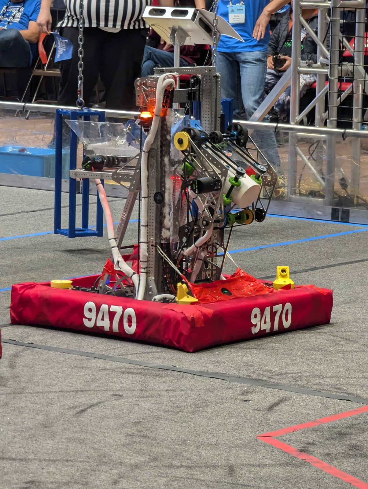
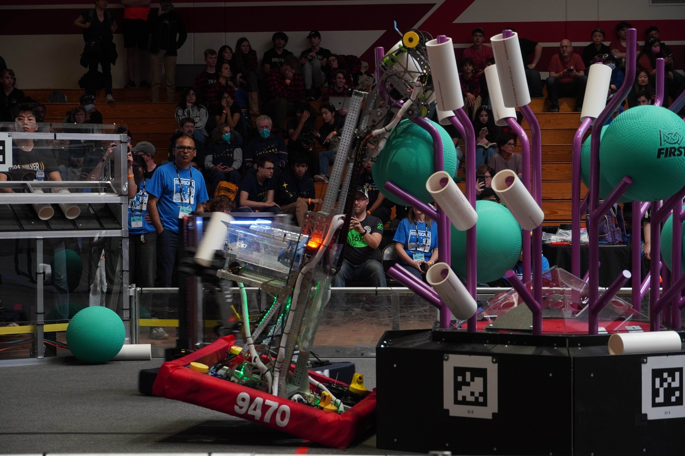
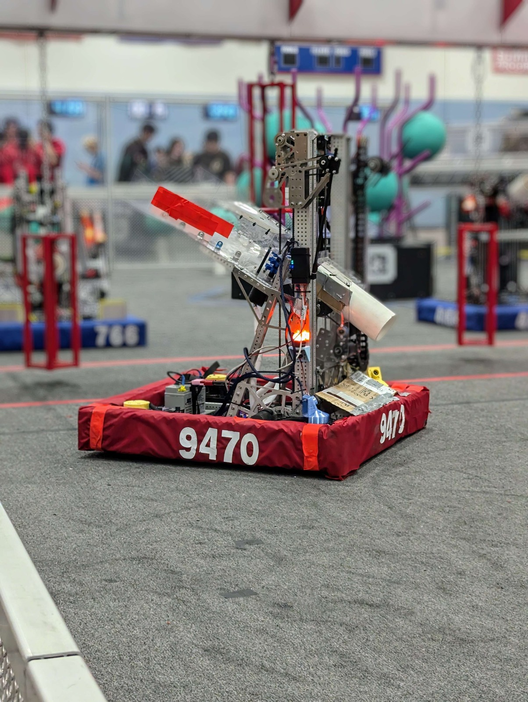
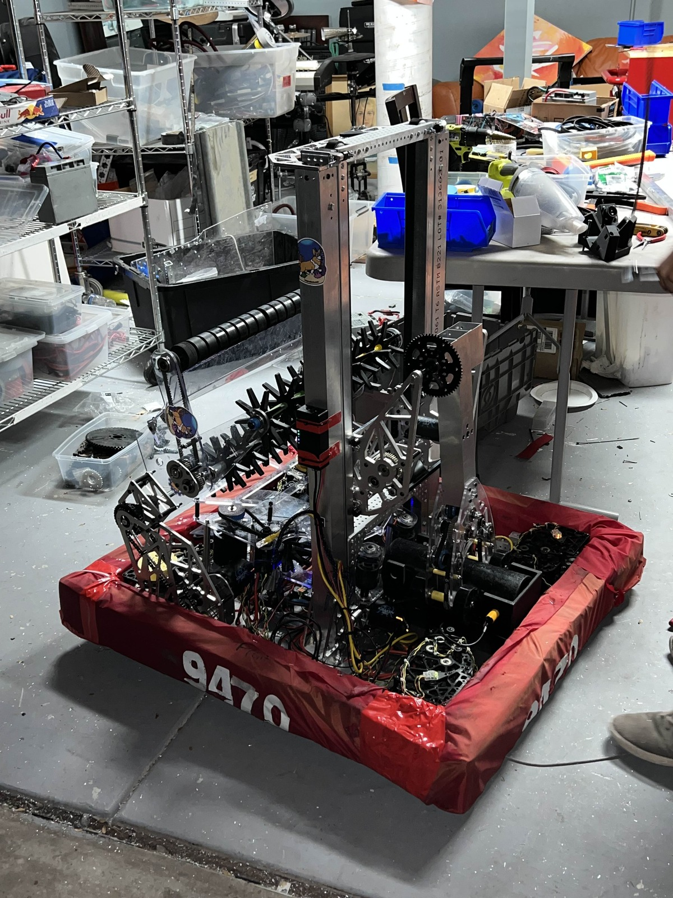

In REEFSCAPE, the main objective was to place PVC pipes (coral) onto a set of steel poles (reef) and remove green playground balls (algae) off the reef and place them in a tray that is elevated in the center line of the field (barge). In the last 15 seconds, robots could climb steel cages suspended by chain under the barge for additional points.
Pinnacles Robot

Specs:
- WCP X2T swerve drivebase
- Two-stage 6:1 cascade elevator
- Aluminum end effector with pivoting roller arm for algae
- 2 Arducams for vision and autoalign to reef pole
This robot specializes in coral scoring, with the ability to remove algae from the reef and score them in the processor.
However, the algae capability was lackluster, and due to the algae arm being mounted on the coral end effector, the end effector was very heavy and the center of gravity was very high when the elevator was raised.

This sometimes resulted in the end effector getting stuck in the reef, as seen in the picture to the left.
Won Autonomous Award in Pinnacles Alliance 4 Pick 1
East Bay Regional (EBR) Robot

Specs:
- WCP X2T swerve drivebase
- Two-stage 6:1 cascade elevator
- Polycarbonate end effector
- Carbon fiber rods to remove algae from the reef
- 2 Arducams for vision and autoalign to reef pole
After Pinnacles, we decided to rebuild from a top-heavy robot to a more grounded robot that fully specialized in coral. We could only remove algae from the reef, with no ability to manipulate it in any other way.
This resulted in a much lighter end effector, allowing us to move the elevator and score coral much faster than before.
However, since we did not have an endgame climbing mechanism, we could only cycle coral during the match, which was detrimental in higher level play. This is because teams were able to completely fill the reef, meaning that the deciding factor for a match was the endgame climb.
Northern California Robotics Invitational (NCRI) Robot
Specs:
- WCP X2T swerve drivebase
- Two-stage 6:1 cascade elevator
- Polycarbonate end effector
- Carbon fiber rods to remove algae from the reef
- 2 Arducams for vision and autoalign to reef pole
- Drop-down funnel with endgame climber mechanism
After EBR, we decided to modify the funnel to add an endgame mechanism while keeping the coral scoring at the same level.
We used a piano hinge and an extra motor to allow the funnel to fold down. We then added a climbing mechanism that used wheels to funnel the cage into a latch that locked the cage inside the robot.
Capital City Classic (CCC) Robot

Specs:
- WCP X2T swerve drivebase
- Two-stage continuous elevator
- Ground coral intake
- Polycarbonate pivoting end effector for both coral and algae
- 2 Arducams for vision and autoalign to reef pole
We decided to make a clone of Team 2056's robot. Instead of the usual cascade elevator and funnel, we used a more complex continuous elevator with a ground intake.
This robot was much more complex than previous robots and was a great learning experience for the upcoming 2026 season.